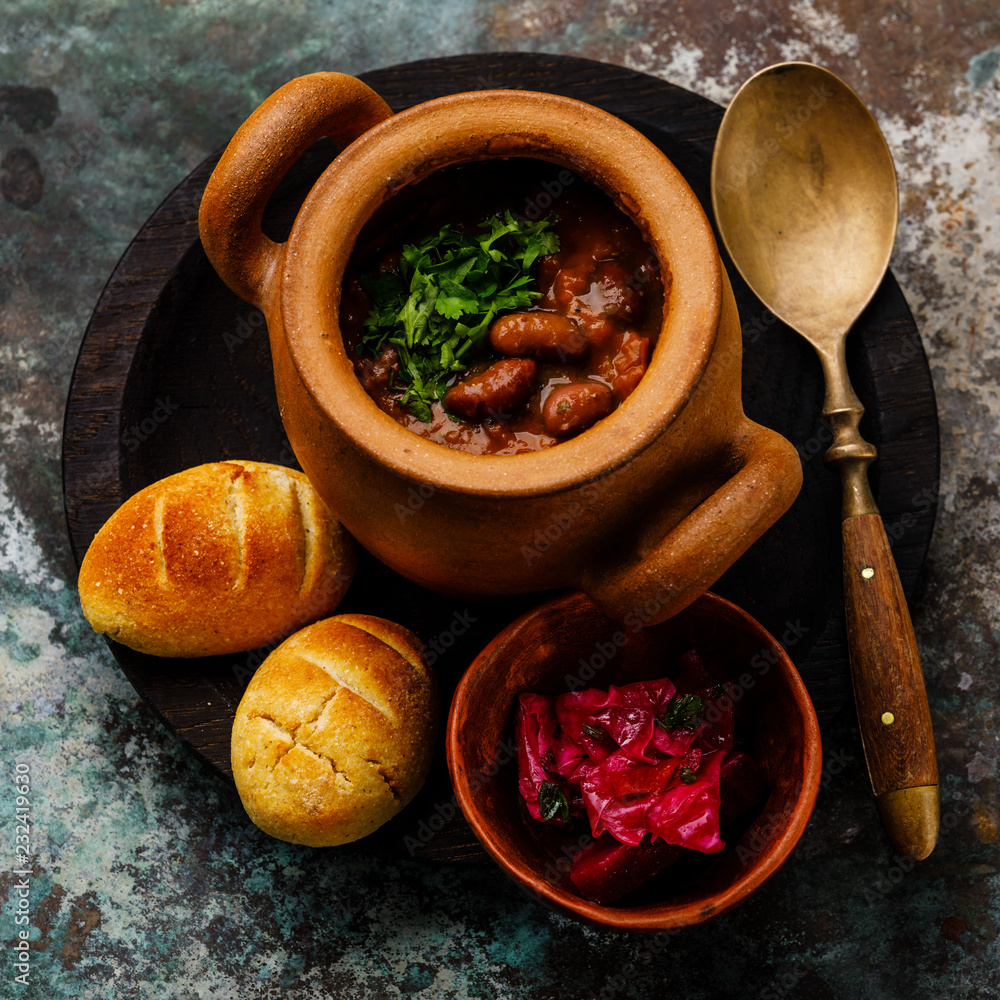

Lobio Recipe

Description
Lobio, meaning “beans” in Georgian, is a comforting, earthy stew made from red kidney beans slow-cooked with onions, garlic, and a fragrant blend of herbs and spices. Though simple, Lobio holds a deep place in Georgian cuisine, often served in clay pots with cornbread (mchadi) and pickled vegetables.
Its roots trace back centuries, especially in the Kakheti and Imereti regions, where beans were a staple of everyday life. Traditionally prepared in rural homes over wood fires, Lobio reflects Georgia’s rich agricultural heritage and the beauty of making something deeply flavorful from humble ingredients.
Traditional Lobio Recipe (Serves 4–6)
- 2 cups (about 400 g) dried red kidney beans (or 3 cans, drained and rinsed)
- 1 large onion, finely chopped
- 1 tsp ground coriander
- 1 tsp blue fenugreek (optional, but authentic)
- ½ tsp ground chili or crushed red pepper (to taste)
- 1 bay leaf
- Salt, to taste
- Fresh cilantro, chopped
- 2 tbsp red wine vinegar or lemon juice
- 3 tbsp vegetable oil
Instructions
- Cook the Beans: If using dried beans, soak overnight. Drain and simmer with a bay leaf until soft (about 1.5–2 hours). If using canned, skip this step.
- Make the Base: In a pan, heat oil and sauté onions until golden. Add garlic, coriander, blue fenugreek, and chili. Cook until fragrant.
- Combine & Simmer: Add the beans (and some of their cooking water) to the onion mixture. Mash some of the beans to thicken. Season with salt and simmer for 10–15 minutes.
- Finish: Stir in vinegar or lemon juice and chopped cilantro. Adjust seasoning.
- Serve Warm or Cold: Lobio is delicious hot or at room temperature, often with mchadi (Georgian cornbread) or puri (traditional bread), and pickled vegetables.
Home